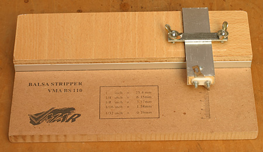

|
This is the V-MAR adjustable balsa stripper, unfortunately now discontinued. It was well made and still works well. You adjust the width of cut by loosening the two wing nuts, and then sliding the aluminum blade holder toward or away from the fence to give the width desired. I set the blade a little deep, so the tip anchors into the MDF base. This helps keep the blade from wandering during the cut. It is a solid, reliable, functional tool, and while no longer available, it should be relatively simple to replicate for anyone with a bit of workshop experience. One detail that might not be apparent is that the aluminum bar is resting in a channel. This is an important design element, as the channel prevents the bar from pivoting, and ruining a cut. |
Copyright 2022, Thayer Syme. All rights reserved